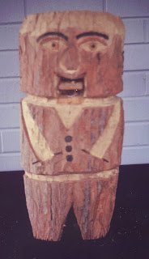

Figure from "specific" tree
9/12/2011
A couple weeks ago on the vent list Steve Axtell asked if anyone knew of a vent figure that had been made from one "specific" tree. He was not asking about the species of tree or wood, but about a tree itself. I've never heard of one made in this manner, although many years ago we did have a tree in our front yard we had to cut down due to old age as it was in danger of falling. After felling the tree, we cut it up into sections and stacked the wood for curing, to be later burned in our fireplace.
On a whim, Kevin (who was then in Jr. Hi) took one of the log sections and created a rustic (crude?) wooden character with moving mouth. So until someone comes up with a better example, here (below) is one "figure" that was made from a "specific" tree...this piece made it from our front yard into our front room. (Until Adelia saw it - then it was delegated to our basement shop! :-)
